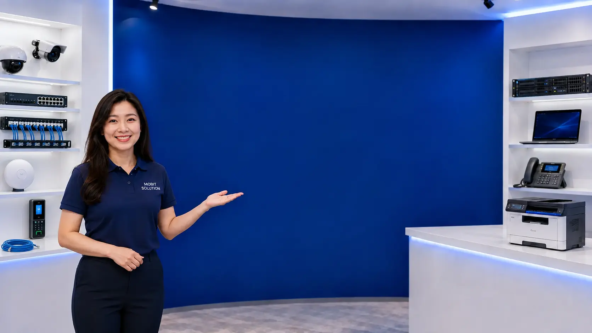

Computers & IT
Business PCs, servers, software and technical support.
PENANG BUSINESS IT & SECURITY SOLUTIONS
Supply · Installation · Repair · Troubleshooting · Support
Factories · Offices · Warehouses · SMEs

WHAT WE DO
One local team to handle your essential IT, connectivity and security systems.
Business PCs, servers, software and technical support.
Network cabling, enterprise Wi-Fi and reliable connectivity.
IP, analog and Wi-Fi camera installation and support.
Business alarm systems with alerts and mobile control.
Card, fingerprint, face and smart access control.
Vehicle recognition and automated entrance control.
RECENT PROJECTS
Selected installations completed by Mobit Solution across Penang and nearby areas.
WHY MOBIT SOLUTION
Since 2003Experienced in business IT, networking and security systems.
Local Penang SupportFast-response support for businesses across Penang and nearby areas.
Supply + Install + After-SalesOne team from planning and installation to ongoing technical support.
Talk directly to our local Penang team for your business IT, networking, CCTV, alarm, door access or ANPR requirements.
WhatsApp 012-4769358